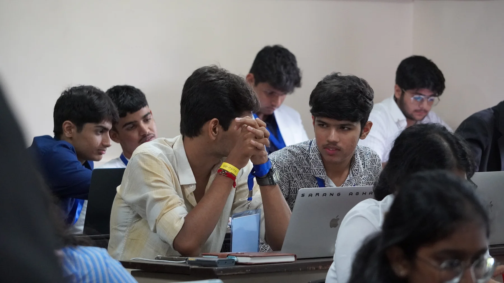
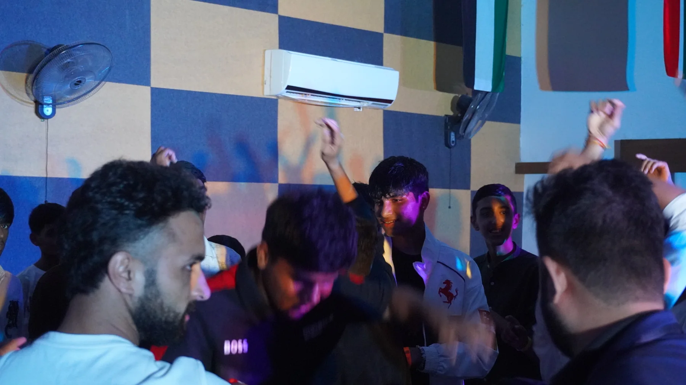
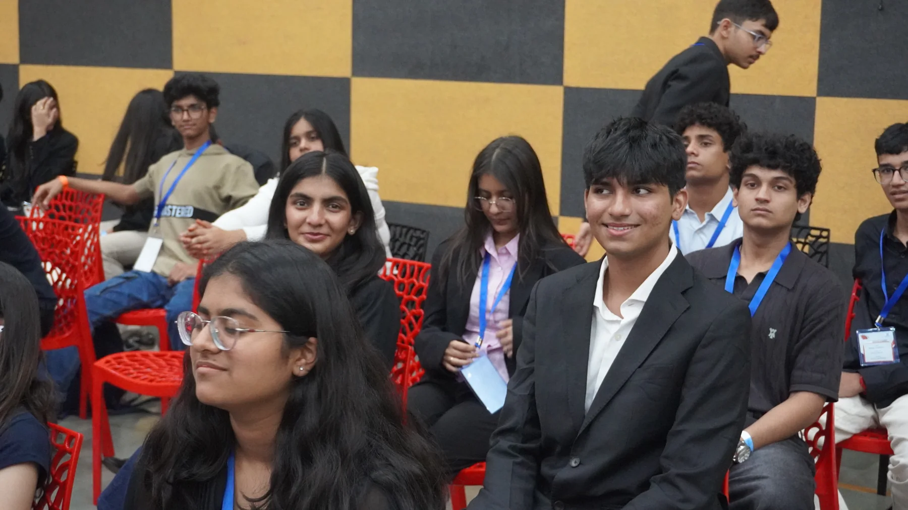

Room to express yourself.
A stage for performance, a platform for ideas and the confidence to put something of your own into the world.
THE IDEA BEHIND ÉLAN
EST. 2026 / MADE FOR YOUNG MINDSTake a position. Try an idea.
Meet someone who sees things differently.


01 / THE PURPOSE
Élan creates space for students to lead, create and connect beyond their own classroom.
Its first edition brought schools together through two live competitive arenas, performances, conversations and shared celebrations. Participants had a role to play and decisions to make.
The ambition is to build an annual student experience with substance behind the spectacle: thoughtful challenges, room for self-expression and connections that reach across schools.
Make leadership, creativity and collaboration something young people can practise together.
02 / THE ORIGINAL FLAGSHIPS
A nation in crisis. A cabinet under pressure. Work with your team, weigh the consequences and defend a response.
Inside the decision room ↗02 / ENTERPRISEBuild a brand or navigate a market. Bring strategy, creativity and judgement to a business arena that keeps changing.
Inside the idea room ↗In the 2026 edition, the two flagships ran in parallel. For the second edition, Crisis Command will be the sole flagship. Cent$ible remains part of our first-edition story.
03 / WHAT MAKES IT ÉLAN
What happens between the sessions matters too.
A stage for performance, a platform for ideas and the confidence to put something of your own into the world.
From cabinet decisions to organising and volunteering, students take ownership of work that affects other people.
Mixed-school teams, shared activities and conversations give people a reason to meet and work together.
Visual identity, atmosphere and the flow of the event all shape how an experience feels—and what people remember.

04 / WHERE IT BEGAN
The first Élan Summit took place at SGIS Pune Campus, Mulshi, on 5–6 September 2026. Across two days, the committee rooms and stage became the setting for our first chapter.
See the first edition ↗05 / THERE IS A PLACE FOR YOU
Explore an experience built around creativity, confidence and working with others.
↗ORGANISERS & VOLUNTEERSHelp shape the details and bring the next chapter of Élan to life.
↗PARTNERS & COLLABORATORSSpeak with the team about supporting young people and future editions.
↗Dates, venue and participation details for the next edition have not yet been announced.
A CONVERSATION STARTS HERE
Founder & Director / Élan 2026
For school participation, volunteering, media or collaboration, get in touch directly.
the.elan.summit@gmail.com ↗+91 8160215010 ↗